Det här är fortsättningen på Kom igång-guiden: funktioner som inte alla behöver varje dag, men som är bra att känna till. Läs det avsnitt du behöver.
Att jämföra två sidor har en egen guide: Jämför två sidor. Bilderna visar ett påhittat testdokument. Ladda ned guiden som PDF.
Metadata är de uppgifter som systemet som öppnade ODV skickade med dokumentet – till exempel dokumenttyp, titel, avdelning, datum, antal sidor och dokument-id. Vilka fält som finns bestäms av det systemet. Uppgifterna visas bara; de kan inte ändras i ODV.
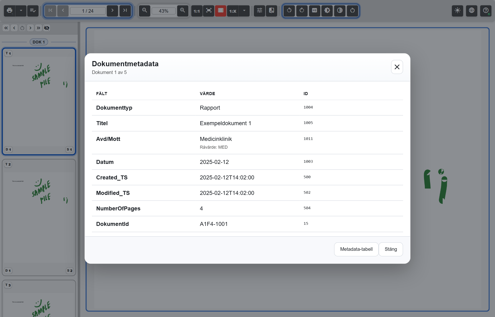
Klicka på Metadata-tabell i metadatadialogen, eller tryck M när du står i visaren. Dialogen Metadataöversikt visar hela sessionen: ett dokument per rad och ett metadatafält per kolumn. Praktiskt när du snabbt vill se vilka avdelningar och datum som ingår.
Tangenten M är pausad i samma lägen som de andra kortkommandona (se Alla kortkommandon). Saknar sessionen metadata händer ingenting.
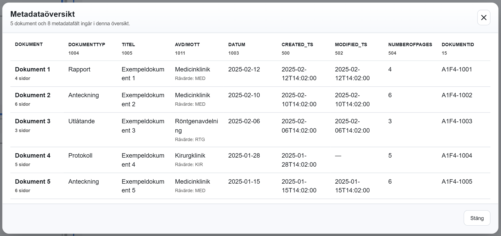
Din organisation kan ha stängt av metadatavisningen. Då saknas menyvalet och tangenten gör ingenting.
Är en PDF i sessionen digitalt signerad visar ODV det på tre ställen:
Kontrollen startar när den första sidan har visats och stör inte läsningen.
Symbolens färg är en sammanfattning av signaturens läge:
Har ett dokument flera signaturer, eller sessionen flera signerade dokument, visar symbolen det allvarligaste läget.
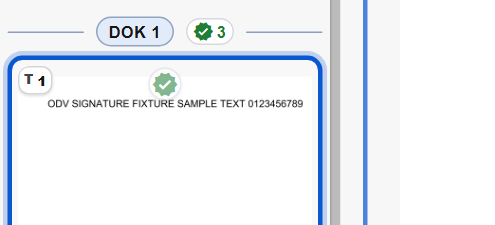
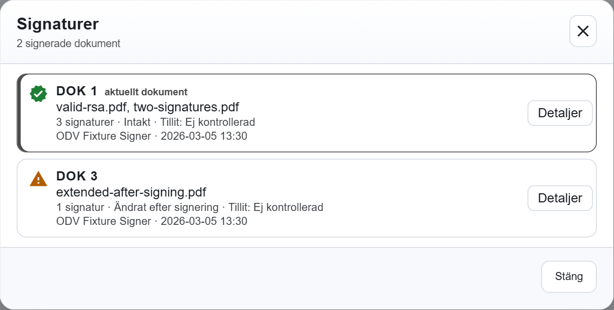
I dialogen Signaturer kan du också klicka på en rad för att gå till dokumentets första sida; dialogen ligger kvar. Samma detaljer når du genom att klicka på symbolen vid dokumentrubriken eller på en sidminiatyr.
Detaljdialogen visar per signatur: Undertecknare, Organisation, Utfärdare, Signeringstid, Orsak, Plats, Typ, Integritet, Omfattar hela dokumentet, Certifikatet giltigt, Tillit och Format. Består dokumentet av flera signerade filer får varje fil en egen flik med filens namn, och rubriken under flikarna visar till exempel Fil 1 av 2. Ett streck betyder att uppgiften saknas i signaturen.
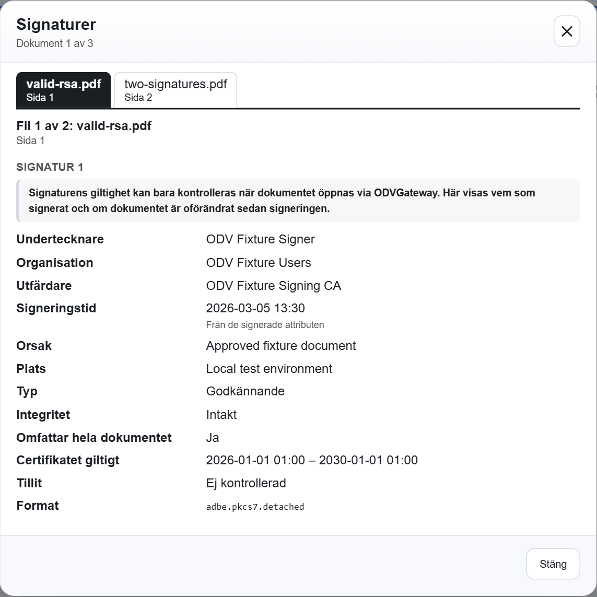
Två rader är särskilt viktiga att hålla isär:
Okänd tillit betyder inte att signaturen är ogiltig. Titta på Integritet för att se om innehållet är oförändrat.
Din organisation kan ha stängt av signaturvisningen helt eller bara symbolerna på sidminiatyrerna.
I odv.site.config.js stänger metadata.enabled av metadatavisningen, pdfSignatures.enabled av signaturvisningen och pdfSignatures.thumbnailPageBadge bara symbolerna på sidminiatyrerna.
Behöver du se en liten detalj på en PDF-sida tydligare? Klicka på HQ i verktygsfältet (Öka PDF-sidans upplösning). Sidan ritas om med dubbel upplösning utan att byta storlek på skärmen, och knappen blir röd. Det gäller bara den sidan och bara under den här sessionen. I jämförelseläget gäller knappen den aktiva sidan.
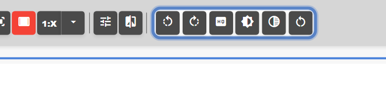
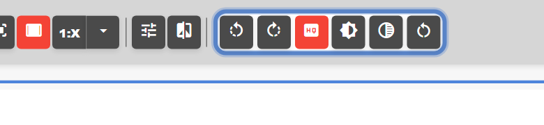
Knappen är grå när den inte kan användas. Håll muspekaren över den så står det varför: sidan är ingen PDF-sida (en bildfil, till exempel en skannad bild, kan inte bli skarpare än originalet), eller sidan ritas redan i högsta säkra upplösning. Är skärpan redan höjd för sidan är knappen röd och går inte att klicka på igen.
Visa sidan i egen storlek. Klicka på 1:X (Egen storlek). Sidan visas i en storlek du själv bestämt: en andel av fönstrets bredd, normalt 70 procent.
Klicka på pilen bredvid knappen för att ändra andelen i fältet Fönsterbredd. Tomt fält betyder att standardvärdet gäller. Enter sparar, Esc ångrar.
Under Avancerat kan du begränsa storleken ytterligare: Fönsterhöjd (sidan får inte bli högre än så många procent av fönstret) och Faktisk storlek (inte större än så många procent av sidans faktiska storlek). ODV använder den minsta av gränserna. Din organisation kan ha andra standardvärden.
Välj hur nya sessioner ska börja. I samma meny, under Standard zoom/storlek, väljer du vilken zoom sidorna får när du öppnar nya dokument: Faktisk storlek (1:1), Anpassa till skärm, Egen storlek eller Anpassa till bredd. Valet gäller direkt, och ODV kommer ihåg det i webbläsaren.
Ångra ditt val: klicka på det markerade valet igen. Då gäller organisationens förval, normalt Anpassa till bredd.
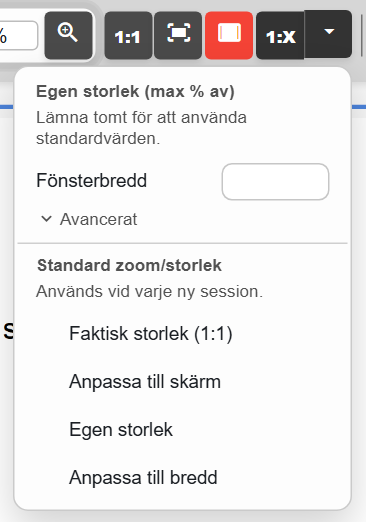
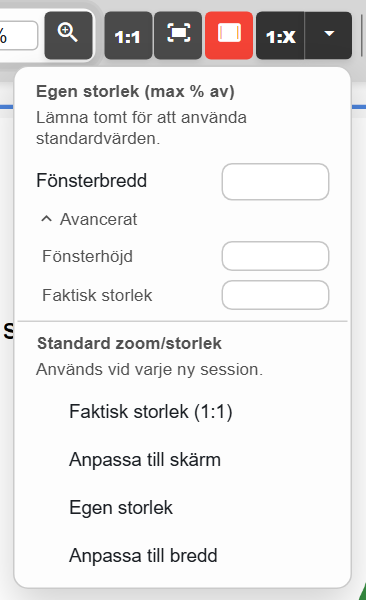
Kortkommandona fungerar när du står i visaren. De är pausade medan en dialog är öppen, medan markören står i ett textfält, och medan urvalsarbetsytan, överlagringsvyn eller gardinvyn är öppen.
| Tangent | Gör detta |
|---|---|
| Pil ned / Page Down | Nästa sida. Håll inne för att bläddra vidare. |
| Pil upp / Page Up | Föregående sida. Håll inne för att bläddra bakåt. |
| Home / End | Första eller sista sidan. |
| Ctrl + Pil ned / Pil upp / Home / End | Samma sak, men dokument för dokument. Bara när sessionen har fler än ett dokument. |
| Shift + något av ovanstående | I jämförelseläget: styr den sida som inte är aktiv. Ctrl+Shift byter dokument i den sidan. |
| Pil höger | Öppnar jämförelsen med sidan du tittar på till höger (senare med den sida du jämförde med sist), eller gör den högra sidan aktiv om jämförelsen redan är igång. |
| Pil vänster | Gör den vänstra sidan aktiv. Tryck igen när vänster redan är aktiv för att avsluta jämförelsen. |
| Ctrl + Pil vänster / Pil höger | Roterar den aktiva sidan ett kvarts varv åt vänster eller höger. |
| + / - (även på det numeriska tangentbordet) | Zooma in eller ut. |
| Ctrl + mushjulet | Zooma in eller ut. |
| Delete | Döljer den aktiva sidan ur urvalet, när alla sidor är inlästa. Ctrl+Delete döljer hela dokumentet; Shift gäller den andra sidan i jämförelsen. |
| M | Öppnar Metadataöversikt, när sessionen har metadata. |
| Ctrl + P | Öppnar normalt ODV:s utskriftsdialog. Din organisation kan ha ställt in webbläsarens egen utskrift i stället, eller stängt av genvägen. |
| Esc | Stänger menyer, dialoger, högerklicksmenyer, överlagringsvyn och gardinvyn. Lämnar urvalsarbetsytan. Avbryter en pågående PDF-förberedelse efter en fråga. |
| Enter / Esc i sidfältet eller procentfältet | Tillämpar eller ångrar det du skrev. |
Med musen: dubbelklicka på sidan för att växla mellan Anpassa till bredd och Anpassa till skärm. Tangenterna i jämförelseläget, överlagringsvyn och gardinvyn finns samlade i guiden Jämför två sidor.
Från vänster till höger. Håll muspekaren över en knapp så visas dess namn. Den knapp som gäller just nu – till exempel den anpassning sidan visas med – är röd.
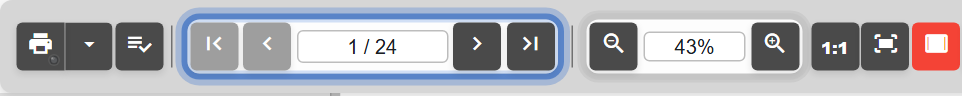
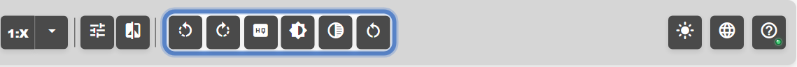
Lampan på hjälpknappen visar visarens läge:
I urvalsarbetsytan, överlagringsvyn och gardinvyn byts verktygsfältet ut mot vyns egna knappar. Vill du ha ett lägre verktygsfält med mindre knappar: se tema och knappstorlek.
Klicka på temaknappen, den första av de tre menyerna längst till höger i verktygsfältet (Välj tema). Menyn har fyra teman:
Knappens ikon visar vilket tema som gäller. ODV kommer ihåg valet i webbläsaren. Förvalet är System, om inte din organisation har valt något annat.
Under temana finns kryssrutan Större verktygsknappar. Med kryss får du det vanliga verktygsfältet, utan kryss ett lägre verktygsfält med mindre knappar. Menyn stannar kvar så att du ser skillnaden direkt, och ODV kommer ihåg även det valet.
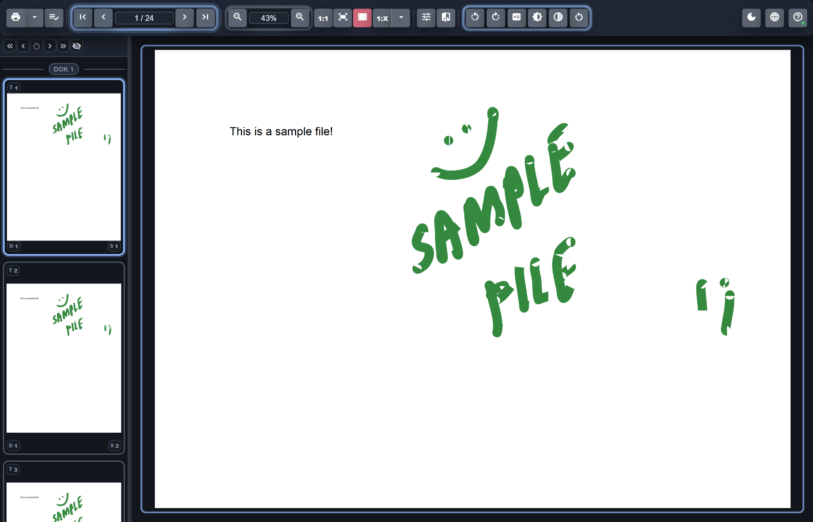
Vänd dig först till din lokala support. De känner till hur ODV är installerat och inställt hos er och kan föra ärendet vidare till leverantören. Två uppgifter gör det mycket lättare att hjälpa dig: versionen och diagnostikfilen. Båda finns i hjälpmenyn under Om OpenDocViewer.
opendocviewer-diagnostics.json hamnar bland dina hämtade filer.Det här är bra att ta med i ärendet:
Viktigt: skicka inga personuppgifter. Bifoga inte skärmdumpar eller utskrifter som visar verkliga dokument, namn eller id-nummer, om inte din organisation uttryckligen har bett om det.
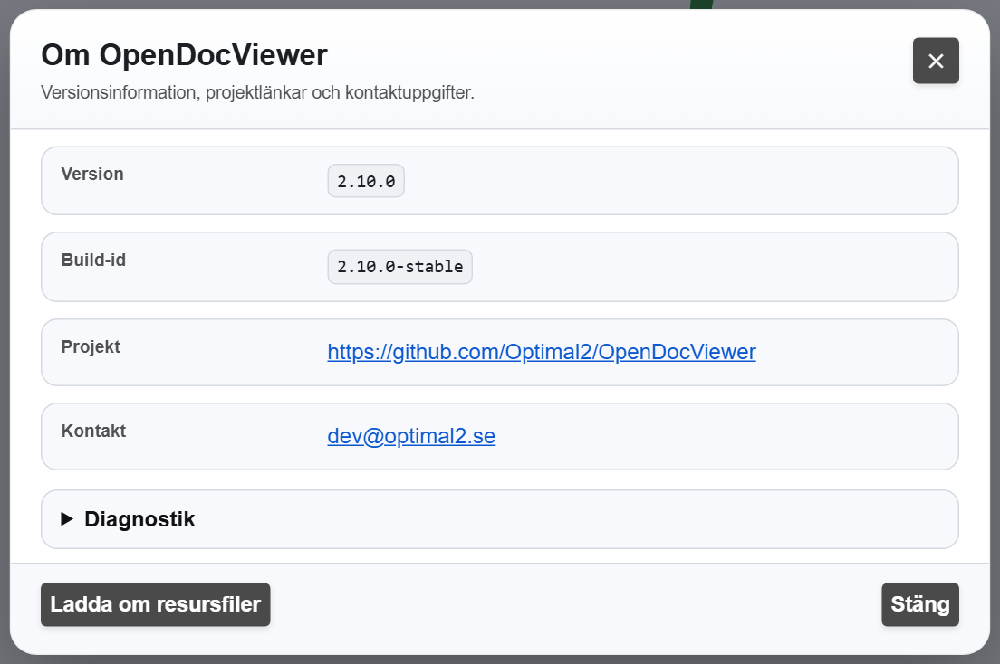
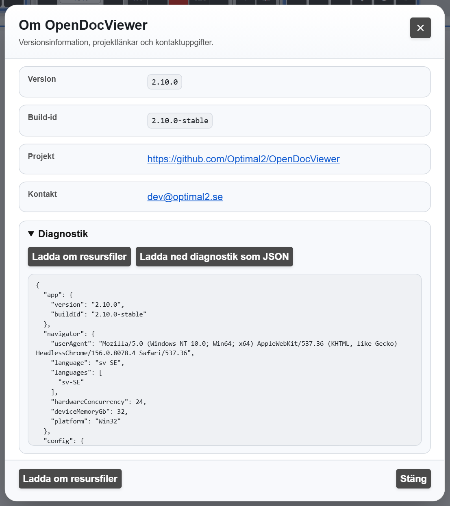
Ladda om resursfiler i samma dialog hämtar om gränssnittets texter (språkfilerna) utan att starta om visaren.
Rutan visas högst upp när sidorna inte längre kan hämtas, oftast för att dokumentsessionen har gått ut. Knappen Starta om sessionen laddar om sidan så att dokumenten hämtas på nytt. Normalt finns också Ladda om visaren och Stäng. Det vanliga fallet beskrivs i Kom igång-guiden.
Har din organisation slagit på raden Tekniska detaljer i rutan: fäll ut den. Där står hur många sidor som inte kunde läsas in och ett tekniskt meddelande. Ta med texten i ärendet.
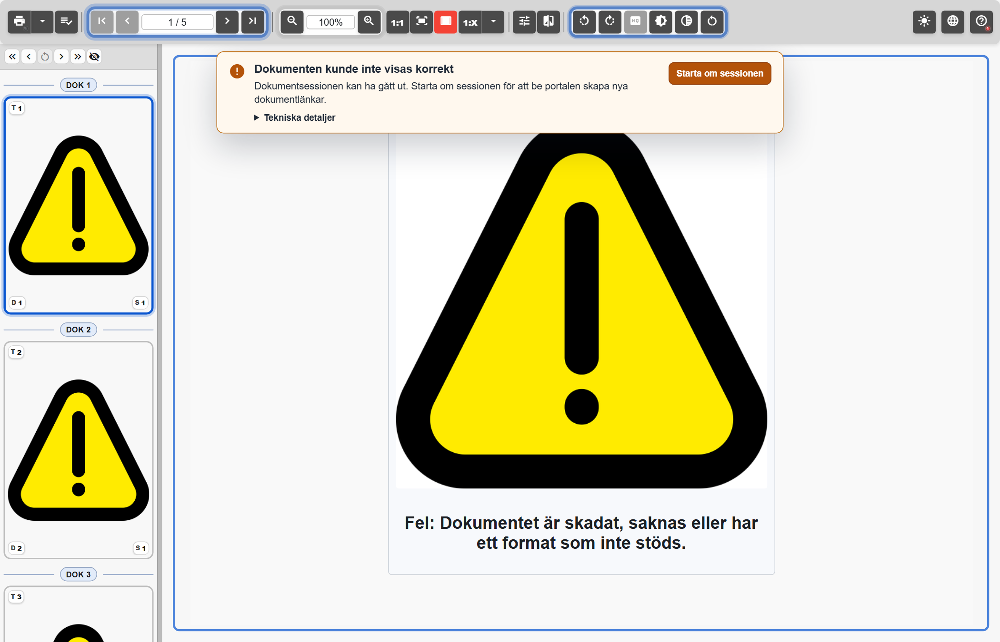
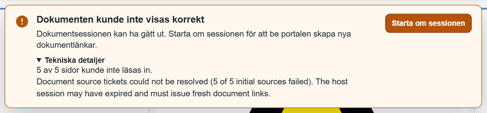
Tillbaka till Kom igång med OpenDocViewer. Guiden gäller OpenDocViewer 2.11. Uppdaterad 2026-10-25.